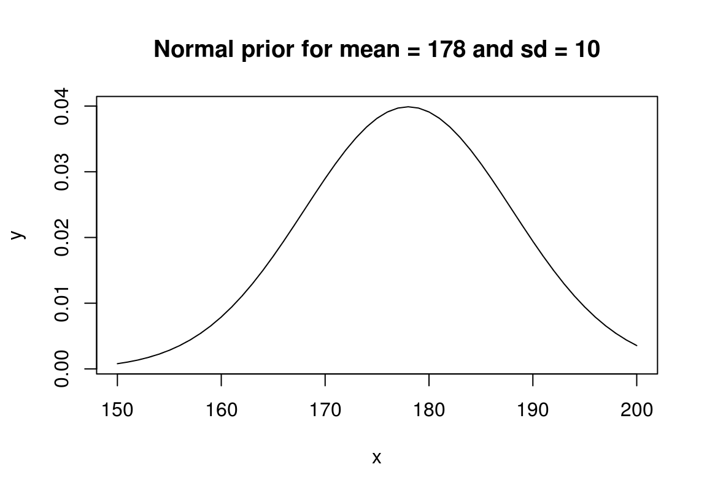
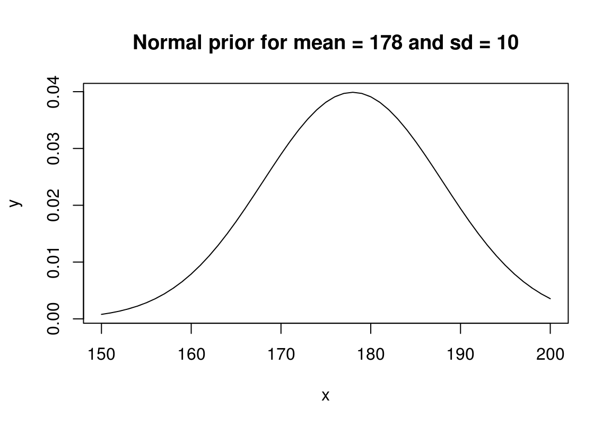

- Saateks
- I OSA
- 1 Sissejuhatus: maailm, teooria ja mudel
- 2 Lineaarsed mudelid
- 3 Kaks lineaarse mudeli laiendust
- 4 Küsimused, mida statistika küsib
- 5 Kuidas näevad välja teie andmed
- 6 EDA — eksploratoorne andmeanalüüs
- 7 Järeldav statistika
- II OSA
- 8 Bootstrappimine
- 9 Bayesi põhimõte
- 10 Mudelite keel
- Ennustame pidevat suurust
- 11 Hierarhilised mudelid
- Lisa
- A Bayesi ja sagedusliku statistika võrdlus
- B Sõnastik
Lihtne normaaljaotuse mudel
Kui me eelmises peatükis modelleerisime diskreetseid binaarseid sündmusi (elus või surnud) üle binoomjaotuse, siis edasi tegeleme pidevate suurustega ehk parameetritega, millele saab omistada iga väärtuse vahemikus -Inf kuni Inf.
library(rethinking)
library(tidyverse)
library(gridExtra)Proovime veelkord USA presidentide keskmist pikkust ennustada (sama näide oli bootstrappimisel). Selleks on meil on vaja kahte asja: (1) tõepära mudelit ning (2) igale tõepära mudeli parameetrile oma priorit.
Selline on täismudeli (tõepära ja priorid) struktuur:
heights ~ dnorm(mu, sigma) # normal likelihood
mu ~ dnorm(mean = 0, sd = 200) # normal prior for mean
sigma ~ dcauchy(0, 20) #half-cauchy prior for sd Tõepära on siin modeleeritud normaaljaotusena, milles on 2 tuunitavat parameetrit: mu (keskmine) ja sigma (standardhälve). Pelgalt nende kahe parameetri fikseerimine annab meile unikaalse normaaljaotuse. See, et keskmise pikkuse prior on tsentreeritud nullile viib õige pisukesele (nõnda laia priori juures küll pigem märkamatule) mu hinnangu nihkumisele nulli suunas. Selle nihke õigustus on püüd vältida mudeli üle-fittimist ehk teisisõnu ülespoole kallutatud hinnangut keskmisele pikkusele. Sama hästi võiksime kasutada ka priorit mu ~ dnorm(mean = 178, sd = 10), kus 178 on ameerika meeste keskmine pikkus.
Alati tasub mudeli priorid välja plottida, et veenduda, et nad tõesti kajastavad meile taustateadmisi ja on sobivas parameetrivahemikus (bayesi programmide default priorid on sageli kas liiga laiad või vastupidi eeldavad, et parameetriväärtused jäävad alla 10 ühiku).
x <- 0:100
y <- dcauchy(x, 0, 20)
plot(y ~ x, type = "l" , main = "Cauchy prior for sd")Joonis .: Cauchy prior
x <- 150:200
y <- dnorm(x, 0, 200)
plot(y ~ x, type = "l", main = "Normal prior for mean = 0 and sd = 200")
x <- 150:200
y <- dnorm(x, 178, 10)
plot(y ~ x, type = "l", main = "Normal prior for mean = 178 and sd = 10") 

Joonis .: Kaks normaaljaotuse prior
Siin on valida kahe priori vahel mu-le. Võib-olla eelistaksid sina mõnda kolmandat? Kui jah, siis pole muud kui tee valmis ja kasuta!
Sama hästi võiksime tõepära modelleerida ka mõne muu jaotusega (Studenti t jaotus, eksponentsiaalne jaotus, lognormaaljaotus jne). Sel juhul oleksid meil erinevad parameetrid, mida tuunida, aga põhimõte on sama. Bayes on modulaarne — kui sa põhimõtet tead, pole tehniliselt suurt vahet, millist mudelit soovid kasutada.
Näiteks:
heights ~ student_t(nu, mu, sigma) # t likelihood
nu ~ dunif(1, 100) # uniform prior for the shape parameter
mu ~ dnorm(mean = 0, sd = 200) # normal prior for mean
sigma ~ dcauchy(0, 20) # half-cauchy prior for sdNormaaljaotusel on kaks parameetrit, millele posteerior arvutada: mu (mean) ja sigma (sd). Seega on vaja ka kahte priorit, üks mu-le ja teine sigma-le. Studenti t jaotuse korral lisandub veel üks parameeter: nu ehk jaotuse kuju määrav parameeter. nu-d saab tuunida 1 ja lõpmatuse vahel. Mida väiksem on nu, seda paksemad tulevad jaotuse sabad. Kui nu on suur, siis on t jaotuse kuju sama, mis normaaljaotusel. Siin andsime nu-le tasase priori 1 ja 100 vahel, hiljem proovime ka teisi prioreid nu-le.
Studenti t jaotus on põnev alternatiiv normaaljaotusele, sest see on vähem tundlik outlieritele. Kuna normaaljaotus langeb servades väga kiiresti siis, kui meil on mõni andmepunkt, mis jääb jaotuse tipust kaugele, on ainus võimalus selle punkti normaaljaotuse alla mahutamiseks omistada jaotusele väga suur standardhälve. See muudab outlierit sisaldava normaaljaotuse ülemäära laiaks, mis viib analüüsis asjatult kaotatud efektidele. Seevastu t jaotuse sabasid saab nu abil üles-alla liigutada vastavalt sellele, kas andmed sisaldavad outliereid (selleks tuleb lihtsalt fittida nu parameeter andmete põhjal).
Outlierid toovad meile paksema sabaga jaotuse, mis tipu ümber ei lähe aga kaugeltki nii laiaks, kui samade andmetega fititud normaaljaotus.
Kui lai on meie tõepärafunktsioon?
Normaaljaotusega modelleeritud tõepärafunktsioon on normaaljaotus, mille keskväärtus = mean(valim) ja mille standardhälve = sd(valim) / sqrt(N), kus N on valimi suurus. See tõepärafunktsioon modelleerib meie valimi keskväärtuse kohtamise tõenäosust igal võimalikul parameetriväärtusel. Kui oleme huvitatud USA presidentide keskmisest pikkusest, siis tõepärafunktsioon ütleb iga võimaliku pikkuse kohta, millise tõenäosusega kohtaksime oma valimi keskväärtust juhul, kui just see oleks tegelik presidentide keskmine pikkus. Sigma, mille posteeriori me mudelist arvutame, on aga standardhälve algsete andmepunktide tasemel. See on väga oluline eristus, sest sigma kaudu saab simueerida uusi andmepunkte.
Lihtne või robustne normaalne mudel?
Proovime mudeldada simuleeritud andmete keskväärtust.
set.seed(890775)
a <- rnorm(20, mean = 0, sd = 1) # expected mean = 0, sd = 1
b <- c(a, 5, 9) # plus 2 outliersSiin kasutame andmeid, mille keskväärtus on 0.38 ja sd = 1 ja millele on lisatud kaks outlierit (5 ja 9). Proovime neid andmeid mudeldada normaaljaotusega tõepäramudeliga ja seejärel üle studenti t jaotuse. Me fitime 4 mudelit, neist 3 koos outlieritega. Mudeli fittimine käib nii, et mcmc ahelad sammuvad parameetriruumis ja iga samm annab meile ühe juhusliku väärtuse posteeriorist. Defaultina on meil üks ahel, mis teeb 1000 sammu (seda saab muuta: vt ?map2stan). Kuna ahelad veedavad rohkem aega seal, kus posterioorne tõenäosuspilv on tihedam, siis saab nõnda sämplitud posteeriori juhuvalimi histogrammist posterioorse jaotuse kuju. Veelgi enam, selle asemel, et tegeleda posterioorsete jaotuste matemaatilise analüüsiga (integreerimisega) võime analüüsida oma mcmc sämpleid otse, mis tähendab, et kõrgema matemaatika asemel vajame 2. klassi aritmeetikat.
Kõigepealt ilma outlieriteta mudel normaalse tõepärafuktsiooniga. Me kasutame sd priorina pool-Cauchy jaotust, mille tipp on 0 kohal ja millel on piisavalt paks saba suuremate numbrite poole. See on väheinformatiivne prior, mis on nähtud sd-de puhul mcmc algoritmides hästi töötavat. Andmed võime map2stan() funktsiooni sisestada nii listina kui data.frame-na (aga mitte tibble kujul).
# Ilma outlierita andmed
m0 <- map2stan(
alist(
y ~ dnorm(mu, sigma), # normal likelihood
mu ~ dnorm(0, 5), # normal prior for mean
sigma ~ dcauchy(0, 2.5) # half-cauchy prior from sd
),
data = list(y = a))Sama mudel, aga outlieritega andmed. map2stan() tõlgib sisestatud mudeli Stan keelde ja see mudel kompileeritakse C++ keelde, milles on kodeeritud Stani mcmc mootor. Kuna kompileerimine on ajakulukas, kasutame m1 fittimiseks rstan raamatukogu (see loetakse sisse rethinkingu depency-na) ja juba komplieeritud m0 mudelit, millele lisame andmed kahe elemendina: N annab andmete arvu ja y tegelikud andmeväärtused. Selline andmete sisestamise viis on omane Stanile - map2stan() arvutab ise kapoti all N-i.
m1 <- stan(fit = m0@stanfit,
data = list(N = length(b),
y = b),
chains = 4)Nüüd studenti t jaotusega tõepäramudel. Argumendid cores = 4, chains = 4 tähendavad, et me jooksutame 4 mcmc ahelat kasutades selleks oma arvuti 4 tuuma. Mudeli m2 juures tähendab argument constraints(list(nu = “lower=1”)), et mcmc sämpleri ahelad ei lähe kunagi allapoole ühte. See on siin kuna definitsiooni kohaselt ei saa nu olla väiksem kui 1. Argument start annab listi, mis annab iga parameetri jaoks väärtuse, millest mcmc ahel posteeriori sämplimist alustab. See on vahest vajalik, sest kui mcmc ahelad hakkavad posteeriori tõenäosuspilve otsima kaugel selle tegelikust asukohast n-mõõtmelises ruumis (n = mudeli parameetrite arv), siis võib juhtuda, et mudeli fittimine ebaõnnestub ja te saate veateate.
m2 <- map2stan(
alist(
y ~ student_t(nu, mu, sigma),
nu ~ dnorm(5, 10),
mu ~ dnorm(0, 5),
sigma ~ dcauchy(0, 2.5)
),
data = list(y = b),
constraints = list(nu = "lower=1"),
start = list(mu = mean(b), sigma = sd(b), nu = 10),
cores = 4,
chains = 4
)m2 <- readRDS("data/stan_m2.rds")
m2@stanfit
#> Inference for Stan model: y ~ student_t(nu, mu, sigma).
#> 4 chains, each with iter=2000; warmup=1000; thin=1;
#> post-warmup draws per chain=1000, total post-warmup draws=4000.
#>
#> mean se_mean sd 2.5% 25% 50% 75% 97.5% n_eff Rhat
#> mu 0.28 0.00 0.22 -0.11 0.14 0.27 0.41 0.76 2066 1
#> sigma 0.78 0.01 0.27 0.39 0.59 0.74 0.92 1.40 1254 1
#> nu 2.21 0.04 1.48 1.04 1.39 1.84 2.53 5.57 1644 1
#> dev 78.68 0.10 3.35 74.84 76.19 77.81 80.25 87.47 1057 1
#> lp__ -27.23 0.04 1.45 -31.06 -27.86 -26.88 -26.16 -25.55 1323 1
#>
#> Samples were drawn using NUTS(diag_e) at Mon Oct 23 15:51:33 2017.
#> For each parameter, n_eff is a crude measure of effective sample size,
#> and Rhat is the potential scale reduction factor on split chains (at
#> convergence, Rhat=1).Ja viimasena studenti t mudel, kus nu on fikseeritud konstandina. Kuna me ei fiti nu-d mudeli parameetrina, pole meil vaja ka priorit nu-le. Me teeme selle mudeli, sest nu täpsel väärtusel pole väga suurt mõju tulemustele. Me lihtsalt fikseerime nu suvalisele väärtusele, mis annab t jaotusele piisavalt paksud sabad.
m3 <- map2stan(
alist(
y ~ student_t(4, mu, sigma),
mu ~ dnorm(0, 5),
sigma ~ dcauchy(0, 2.5)
),
data = list(y = b),
constraints = list(nu = "lower=1"),
start = list(mu = mean(b), sigma = sd(b)),
cores = 4,
chains = 4)Üks esimesi asju mida koos parameetrite vaatamisega teha on lisaks vaadata, kas ka ahelad konvergeerusid. Selleks saab mugavalt kasutada rethinking::tracerplot() funktsiooni.
tracerplot(m2)Joonis 2.11: Traceplot markovi ahelate inspekteerimiseks
Pildilt on näha, et neli ahelat (4 värvi) on hästi konvergeerunud. Hall ala on nn warmup ala, mille tulemusi ei salvestata. Muidu astub iga ahel sammu kaupa ja iga edukas samm salvestatakse ühe posteeriori väärtusena. Ahel sämplib korraga mu, sigma ja nu väärtusi n-mõõtmelises ruumis (n = mudeli parameetrite arv), mis tähendab, et ahela iga samm salvestatakse n kõrvuti numbrina.
Kui näit sigma kõrgema väärtusega kaasneb keskeltäbi kõrgem (või madalam) mu väärtus, on sigma ja mu omavahel korreleeritud. Et kontrollida parameetrite posterioorsete väärtuste korrelatsioone kasutame funktsiooni rethinking::pairs():
pairs(m2)Joonis 2.5: korrelatsiooniplot mudeli parameetritele.
Normaaljaotus on selle poolest eriline, et tema parameetrid mu ja sigma ei ole korreleeritud. Paljud teised mudelid ei ole nii lahked. Siin on meil mõõdukas korrelatsioon nu ja sigma vahel. See on igati loogiline ja ei häiri meid.
MCMC ahelate kvaliteet
Kui Rhat on 1, siis see tähendab, et MCMC ahelad on ilusti jooksnud ja posteeriori sämplinud. Kui Rhat > 1.1, siis on probleem. Suur Rhat viitab, et ahel(ad) pole jõudnud konvergeeruda. Kui ahelad ei konvergeeru, siis võib karta, et nad ei sämpli ka sama posteeriori jaotust. Kontrolli, kas mudeli kood ei sisalda vigu. Kui ei, siis vahest aitab, kui pikendada warm-up perioodi (map2stan(..., iter = 3000, warmup = 2000) pikendab default warm-upi 2 korda). Vahest aitab mudeli re-parametriseerimine (siin on lihtne trikk tekitada priorid, mis ei erineks väga palju oma vahemiku poolest; sellega kaasneb sageli andmete tsentreerimine või standardiseerimine; vt allpool).
n_eff on efektiivne valimi suurus, mis hindab iseseisvalt sämplitud andmete arvu ning see ei tohi olla väga väike. Kui n_eff on palju väiksem kui jooksutatud markovi ahela pikkus (iga ahel on defaultina 1000 iteratsiooni pikk), on ahel jooksnud ebaefektiivselt. See ei tähenda tingimata, et posteerior vale oleks. Reegilina peaks Neff/N > 0.1
Ahelad peavad plotitud kujul välja nägema nagu karvased tõugud, mis on ilma paljaste laikudeta. Kui ahelad omavad pikki sirgeid lõike (n_eff tuleb siis väga madal), kus ahel ei ole töötanud, siis see rikub korralikult posteeriori. Tüüpiliselt aitavad nõrgalt informatiivsed priorid — priorite õige valik on sama palju arvutuslik vajadus kui taustainfo lisamine. Igal juhul tuleb vältida aladefineeritud tasaseid prioreid, mis võimaldavad ahelatel sämplida lõpmatust ja sel viisil õige tee kaotada. Peale selle, tasased priorid, mis ütlevad, et kõik parameetri väärtused on võrdselt tõenäolised, kajastavad harva meie tegelikke taustateadmisi.
Halvad WARNING-ud: divergent transitions (too many), BMFI too low — võivad tähendada, et ahelad ei tööta korralikult. WARNING-ute kohta saad abi siit http://mc-stan.org/misc/warnings.html.
Ilusamad parameetriplotid saab kasutades “bayesplot” raamatukogu funktsioone.
Esiteks usalduspiirid:
library(bayesplot)
fit2d <- as.data.frame(m2@stanfit)
pars <- names(fit2d)
# inner interval = 50% CI and outer interval = 95% CI.
mcmc_intervals(fit2d,
pars = pars[1:3],
prob = 0.5,
prob_outer = 0.90)
Joonis 2.12: Posteeriorite CI plot
Ja teiseks täis posteeriorid.
mcmc_areas(fit2d, pars = pars[1:2], prob = 0.8)
Joonis 2.6: Posteeriorite tihedusplot.
Funktsiooniga rethinking::extract.samples() saame koos sämplitud parameetrite numbrid kõrvuti (rea kaupa) tabelisse.
m2sampl <- extract.samples(m2) %>%
as.data.frame() %>%
mutate(CV = sigma / mu)Sellest tabelist võib arvutada posteerioreid ka uutele “väljamõeldud” parameetritele. Näiteks arvutame posteeriori CV-le:
ggplot(m2sampl, aes(CV)) +
geom_density(breaks = seq(0, 1, by = 0.1)) +
xlim(0, 10)
#> Warning: Ignoring unknown parameters: breaks
#> Warning: Removed 609 rows containing non-finite values (stat_density).
Joonis 10.1: Posteerior uuele parameetrile
Kuna posteerior iseloomustab meie teadmiste piire, siis võime selle abil küsida, kui suure tõenäosusega jääb tõeline CV näiteks parameetrivahemikku 2 kuni 5?
intv <- filter(m2sampl, between(CV, 2, 5)) %>% nrow(.) / nrow(m2sampl)
intv
#> [1] 0.415Vastus on, et me arvame 42 kindlusega, et tõde jääb kuskile sellesse vahemikku.
Võime ka küsida, millesesse vahemikku jääb näiteks 67% meie usust mu tõelise väärtuse kohta?
HPDI(m2sampl$CV, prob = 0.67)
#> |0.67 0.67|
#> 0.964 4.058Nüüd võrdleme nelja fititud mudelit, et otsustada, milline mudel kirjeldab kõige paremini outlieritega andmeid. m0 on ilma outlierita mudel ja me tahame teada, milline mudel m1, m2 või m3 annab sellele kõige lähedasemad tulemused.
coeftab_plot(coeftab(m0, m1, m2, m3),
pars = c("mu", "sigma"),
prob = 0.5)Joonis 10.2: Võrdlev plot mitme mudeli posteerioritele.
Me sättisime usalduspiirid 0.5 peale, mis tähendab, et need ennustavad, kuhu peaks mudeli järgi jääma parameetri tegelik väärtus 50%-se tõenäosusega. Nagu näha, on m2 ja m3 posteeriorid palju lähemal m0-le kui normaaljaotusega fititud m1 oma. Eriti drastilised on erinevused sigma hinnangule. Lisaks, m1 mudeli mu usaldusintervall on palju laiem kui m0, m2 ja m3 oma — mudel nagu saaks aru, et andmed lõhnavad kala järgi.
Näide: USA presidentide keskmine pikkus
Läheme tagasi normaaljatuse ja USA presidentide juurde. Kõigepealt defineerime priorid. Alati on mõistlik priorid välja joonistada ja vaadata, kas nad vastavad meie ootustele. Pea meeles, et sigma ehk sd on samades ühikutes, mis mõõtmisandmed.
Kui sulle need priorid ei meeldi, tuuni priorite parameetreid ja proovi uuesti plottida.
x <- -500:500
y <- dnorm(x, 0, 200)
plot(x, y, main = "Prior for mu", type = "l")Joonis 10.3: Prior keskmisele.
Siin kasutame nõrgalt informatiivseid prioreid. Idee on selles, et normaaljaotus, mis on tsentreeritud 0 ümber, tõmbab meie posteeriorit nõrgalt nulli poole (nõrgalt, sest jaotus on hästi lai võrreldes tõepärafunktsiooniga). Pane tähele, et oma priori kohaselt usume me, et 50% tõenäususega on USA presidentide keskmine pikkus negatiivne. See prior on tehniline abivahend, mitte meie tegelike uskumuste peegeldus presidentide kohta. Aga tehniliselt kõik töötab selles mõttes, et andmed domineerivad posteeriori üle ja priori sisuliselt ainus ülesanne on veidi MCMC mootori tööd lihtsustada.
Sigma priorina kasutame half-Cauchy jaotust, mis on samuti väheinformatiivne. Half-Cauchy ei saa olla < 0 ja on meile soodsa kujuga sest annab suurema tõenäosuse nullile lähemal asuvatele sd-väärtustele — aga samas, kuna ta on paksu sabaga, ei välista see ka päris suuri sd väärtusi.
x <- 0:200
y <- dcauchy(x , 0, 10)
plot(x, y, main = "Prior for sigma", type = "l")
Joonis 10.4: Prior SD-le
Tekitame andmeraami analüüsiks ja mudeli, mis põhineb normaalsel tõepärafunktsioonil.
heights <- c(183, 192, 182, 183, 177, 185, 188, 188, 182, 185)
us_presidents <- data_frame(Height = heights, id = "usa")
potusm1 <- map2stan(
alist(
Height ~ dnorm(mu, sigma), # normal likelihood
mu ~ dnorm(0, 200), # normal prior for mean
sigma ~ dcauchy(0, 10) # half-cauchy prior from sd
), data = us_presidents
)Mudeli koefitsiendid:
precis(potusm1)
#> Mean StdDev lower 0.89 upper 0.89 n_eff Rhat
#> mu 184.5 1.5 181.90 186.71 482 1
#> sigma 4.7 1.3 2.87 6.36 471 1Nüüd teeme katse võrrelda USA presidentide ja Euroopa ning mujalt pärit riigijuhtide keskmisi pikkusi. Kõigepealt loome analüüsitava andmeraami.
world_leaders <- read_csv2("data/world_leaders.csv")
presidents <- world_leaders %>%
select(Country, Height) %>%
bind_rows(us_presidents)
knitr::kable(head(presidents))| Country | Height |
|---|---|
| Canada | 188 |
| Cuba | 190 |
| France | 170 |
| France | 165 |
| France | 189 |
| France | 172 |
Ja siin on mudel. Nüüd on mu ümber defineeritud kui mu1[indeks], mis tähendab, et mu1 saab kaks hulka väärtusi, üks kummagil indeks muutuja tasemel. Sellega jagame oma andmed kahte ossa (USA versus Euroopa ja muu maailm), mida analüüsime eraldi. Sigma on mõlemale kontinendile sama, mis tähendab, et mudel eeldab, et presidentide pikkuste jaotus on mõlemal kontinendil identne.
# Split into 2 groups
presidents <- presidents %>%
mutate(Groups = case_when(
Country == "USA" ~ "USA",
Country != "USA" ~ "World"
))Adult human height varies country-by-country, we take 170 cm as relatively safe prior for male height.
potusm2 <- map2stan(
alist(
Height ~ dnorm(mu, sigma),
mu <- mu_1[Groups], # mu is redifined as mu_1, which takes values at each indeks level
mu_1[Groups] ~ dnorm(170, 10), # normal prior for mean
sigma ~ dcauchy(0, 10) # half-cauchy prior from sd
),
data = presidents)precis(potusm2, depth = 2)
#> Mean StdDev lower 0.89 upper 0.89 n_eff Rhat
#> mu_1[1] 182.8 3.57 177.11 188.2 885 1
#> mu_1[2] 176.3 1.85 173.33 179.2 836 1
#> sigma 11.7 1.26 9.86 13.8 628 1Me võime ka vaadata 2 grupi standardhälbeid lahus. Järgnevas mudelis on mõistlik ahelale stardipositsioon ette anda.
## Calculate start values
startvalues <- presidents %>%
group_by(Groups) %>%
summarise_at(vars(Height), funs(mean, sd))
## Fit model
potusm2.1 <- map2stan(
alist(
Height ~ dnorm(mu, sigma),
mu <- mu_1[Groups],
sigma <- sigma_1[Groups],
mu_1[Groups] ~ dnorm(170, 10), # normal prior for mean
sigma_1[Groups] ~ dcauchy(0, 10) # half-cauchy prior from sd
),
data = presidents,
start = list(mu_1 = startvalues$mean,
sigma_1 = startvalues$sd)
)tracerplot(potusm2.1, n_cols = 2)
Joonis 10.5: Traceplot.
Tulemus ES-i osas tuleb üsna sarnane.
plot(coeftab(potusm2, potusm2.1))Joonis 10.6: mudelite võrdlusplot.
precis(potusm2, depth = 2)
#> Mean StdDev lower 0.89 upper 0.89 n_eff Rhat
#> mu_1[1] 182.8 3.57 177.11 188.2 885 1
#> mu_1[2] 176.3 1.85 173.33 179.2 836 1
#> sigma 11.7 1.26 9.86 13.8 628 1Siin tuleb kasulik trikk: me lahutame rea kaupa mu1[1] posteeriori sampli liikmed mu1[2] sampli liikmetest. Nii saame posteeriori efekti suurusele ehk hinnangu sellele, mitme cm võrra on USA presidendid keskmiselt pikemad kui Euroopa omad!
samplespm2 <- extract.samples(potusm2) %>%
as.data.frame() %>%
mutate(ES = mu_1.1 - mu_1.2)
dens(samplespm2$ES)
Joonis 10.7: Posteerior ES-le.
median(samplespm2$ES)
#> [1] 6.56
rethinking::HPDI(samplespm2$ES, prob = 0.9)
#> |0.9 0.9|
#> -1.09 12.02
mean(samplespm2$ES < 0)
#> [1] 0.065Võrdse SD-ga mudeli järgi on USA presidendid keskeltläbi 6.6 cm pikemad, ebakindlus selle hinnangu ümber on suur – 90% HDI on -1.1 kuni 12 ja tõenäosus et pikkuste erinevus on väiksem kui 0 on 0.06.
samplesm2.1 <- extract.samples(potusm2.1) %>%
as.data.frame() %>%
mutate(ES = mu_1.1 - mu_1.2)
median(samplesm2.1$ES)
#> [1] 7.54
HPDI(samplesm2.1$ES, prob = 0.9)
#> |0.9 0.9|
#> 3.39 12.16
mean(samplesm2.1$ES < 0)
#> [1] 0.001Erineva SD-ga mudeli järgi on riigijuhtide pikkuste vahe 7.5 cm, ebakindlus väiksem – 90% HDI on 3.4 kuni 12.2 ja tõenäosus et pikkuste erinevus on väiksem kui 0 on 0.
See ei tähenda tingimata, et me peaksime eelistama teist mudelit. Oluline on, mida me teoreetiliselt usume, kas seda, et tegelik presidentide varieeruvus on USAs ja Euroopas võrdne, või mitte.